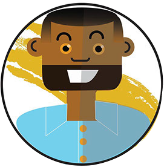

Corbin Graves
MFA student in Interactive media with a concentrations in UX/UI design.
Formerly Art teacher in NC and NY. 2019-2021 Graduate Stipend Award recipient.
Design skills in Illustration, graphic, data visualization, and UX/UI design.
Looking to use my organization, design, creative problem solving, as well as my interpersonal skills.
EDUCATION
University of Miami.
MFA Interactive Media UX/UI design.
2019-2021
East Carolina University
Bachelors of Fine arts in Art Education
2008-2012
PROFESSIONAL EXPERIENCE
School of communication senator Graduate Student Association.
Miami, FL | 2019-present
Artist/Graphic Designer/design (freelance)
2012-2019
Member of proud teacher Initiative
Brooklyn, NY | 2016-2019
School Representative for “Stand Out” LGBTQ teacher organization.
Brooklyn, NY | 2016-2019
Art teacher Bushwick Elementary
Brooklyn, NY | 2016-2019
Art teacher at Asheboro city schools
Asheboro, NC | 2014-2016
Member of proud teacher Initiative
Brooklyn, NY | 2016-2019
Experience
Planing/organization of annual art showcase.
Brooklyn, NY | 2016-2019
- meetings with local galleries.
- create working relationship between galleries and school.
- advertised/ promoted showcase to community (social media and print media).
Tutoring/ individual art lessons at J.H. Rose High school
Brooklyn, NY | 2016-2019
- Teacher at “Giggle Gang” Autistic after school program.
- Class of fifteen students of special needs students at varying levels ability
- Wrote lesson plans for class.
- Taught classes using a variety of materials. (Clay, mixed media, painting,drawing).
- Worked with peer teachers to design and implement curriculum.
- One on one work with student.
Internship at Emerge Gallery and Arts Cente
Greenville, NC | 2011
- Worked with children teaching ceramic classes and mixed media classes (6yr-13yr).
- C Experience hanging art and working with show openings.
- Practice designing grant proposal for “Vulcan” artist residency.
- Volunteering with children’s arts workshops and birthday parties at Pitt County Arts Council at Emerge Gallery.
- Hanging and display of multiple media of art (ceramic, sculpture, painting, drawings, mixed media).
- OWorking with coordinating and set up of exhibition space.
- Manage teaching art classes at Emerge gallery.
East Carolina Youth Arts Festival
Greenville, NC | 2010
- Art making mini projects.
- Directed young children (ages 3-9) in the intuitive creation of a large scale bamboo spaceship.
- Worked with Tau Beta Sigma National honorary sorority’s instrument petting zoo (allowing young children to practice and get a better understanding of different instruments).
Skills
Design
- Illustration & UI graphics
- Strategy & vision presentation
- Wireframes & mock ups
- Concept Sketches with Figma & Illustrator
- Adobe XD
- Teams
- Coding(HTML,CSS JAVA,C,C#,JQuery)
|
Collaboration
- Organizing art shows
- Self Starter
- Team player
- Iteration
- Flexible
- Strong Communication skills
- Presntation/teaching experience
- Time Management
|
Research
- Stakeholder mapping
- Interviews
- UX research
- Persona & Scenario creation
- Protoyping
- Focus groups